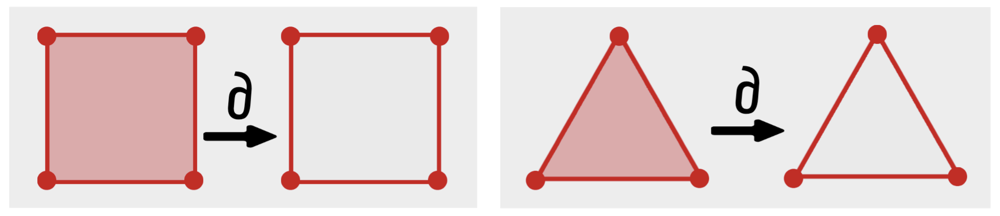
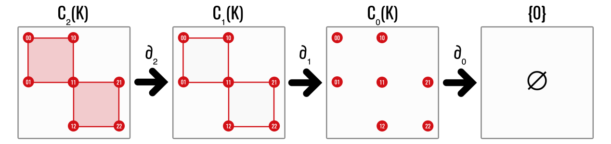
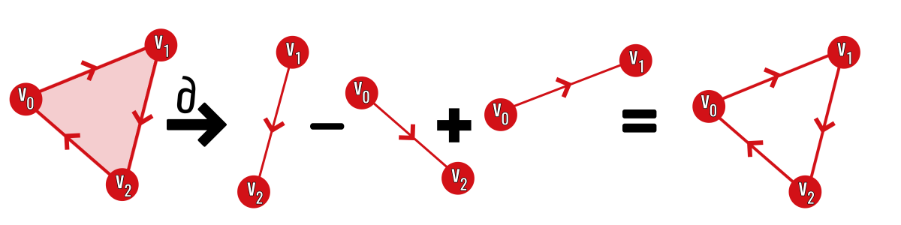
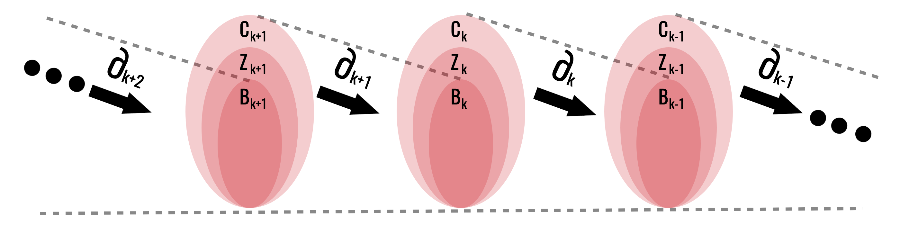
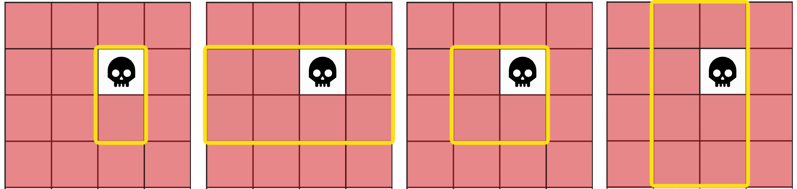
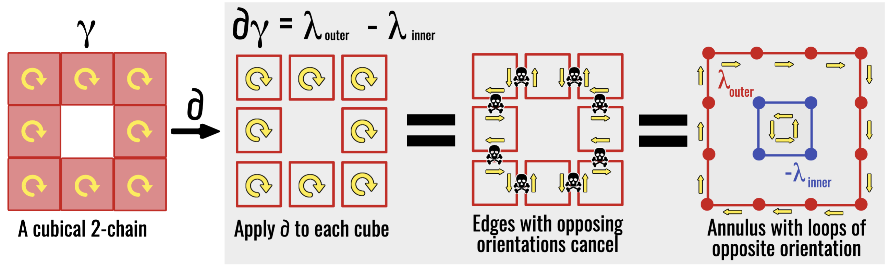
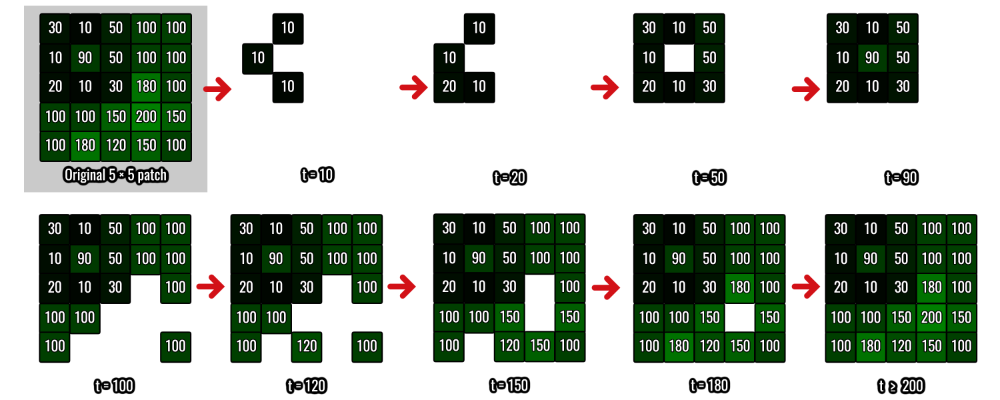

Chains, Boundaries, and Homology
Turning holes into quotient vector spaces
Homology counts holes by comparing two kinds of chains:
- cycles, which have no boundary; and
- boundaries, which enclose higher-dimensional cells.
A hole is represented by a cycle that is not itself a boundary. The construction developed here follows the standard computational treatment (Edelsbrunner and Harer 2010; Nanda 2023).
The entire construction can be understood by comparing two objects:
- the four-edge perimeter of a square, with no interior; and
- the same perimeter together with the filled square.
The perimeter has no boundary, so it is a cycle in both objects. In the first object it surrounds a hole. In the second it is itself the boundary of the filled square and should not count as a hole. Homology is the algebraic rule that makes exactly this distinction.
1 Chain groups
Let \(K\) be a finite cell complex and work over \(\mathbb F_2\). The \(k\)th chain group \(C_k(K)\) is the vector space with the \(k\)-cells of \(K\) as a basis.
Thus:
- \(C_0(K)\) contains formal sums of vertices;
- \(C_1(K)\) contains formal sums of edges; and
- \(C_2(K)\) contains formal sums of squares or triangles.
Because coefficients lie in \(\mathbb F_2\), a chain can be identified with a subset of cells. Addition is symmetric difference.
The word formal is important: adding two edges does not mean adding their coordinates or lengths. It means placing both edges in one algebraic collection. If the same edge is selected twice, its coefficient is \(1+1=0\), so it disappears.
2 The boundary operator
Definition 1 (Boundary operator) The boundary operator
\[ \partial_k\colon C_k(K)\to C_{k-1}(K) \]
sends each cell to the sum of its facets and extends linearly.
For an edge \(e=[u,v]\),
\[ \partial_1 e=u+v. \]
For a square \(\kappa\) with boundary edges \(e_1,e_2,e_3,e_4\),
\[ \partial_2\kappa=e_1+e_2+e_3+e_4. \]

The first picture shows what (_k) does to one cell. Arranging the same operation in every dimension produces the chain complex in the next picture: (2)-cells map to edge chains, edge chains map to vertex chains, and vertex chains map to zero.

2.1 The simplicial boundary
The same construction works for simplicial complexes. Let \(C_k^\triangle(K)\) have the \(k\)-simplices as a basis.
Definition 2 (Simplicial boundary operator) For a \(k\)-simplex \(\sigma=[v_0,\ldots,v_k]\), define
\[ \partial_k^\triangle\sigma = \sum_{i=0}^k [v_0,\ldots,\widehat{v_i},\ldots,v_k], \]
where the hat means that \(v_i\) is omitted. Extend the formula linearly to all simplicial \(k\)-chains.
For a triangle,
\[ \partial_2^\triangle[v_0,v_1,v_2] =[v_1,v_2]+[v_0,v_2]+[v_0,v_1], \]
the formal sum of its three edges. Thus the cubical and simplicial formulas implement the same instruction—sum the codimension-one faces—even though the cells have different shapes.

3 Boundary of a boundary
Lemma 1 (Fundamental lemma of homology) For every cubical chain,
\[ \partial_{k-1}\circ\partial_k=0. \]
Proof. It is enough to prove the identity on a basis cube \(\kappa=I_1\times\cdots\times I_n\). Each codimension-two face of \(\kappa\) is obtained by collapsing two distinct non-degenerate factors, say \(I_a\) and \(I_b\). It appears twice in \(\partial(\partial\kappa)\): once by collapsing \(I_a\) first and \(I_b\) second, and once in the opposite order.
Over \(\mathbb F_2\), the two copies have total coefficient \(1+1=0\). With oriented coefficients, the two orders have opposite signs and cancel for the same reason. Every term in \(\partial(\partial\kappa)\) is such a codimension-two face, so the whole sum is zero. Linearity extends the result from cubes to all chains.
Lemma 2 (The simplicial boundary also squares to zero) For every \(k\geq2\),
\[ \partial_{k-1}^\triangle\partial_k^\triangle=0. \]
Proof. Evaluate the composite on a simplex \(\sigma=[v_0,\ldots,v_k]\). Every codimension-two face is obtained by deleting two distinct vertices, say \(v_i\) and \(v_j\). It occurs once when \(v_i\) is deleted first and \(v_j\) second, and once in the opposite order. Thus every codimension-two face occurs exactly twice and cancels over \(\mathbb F_2\). Linearity gives the result for every simplicial chain.
Both cell models therefore produce the same algebraic pattern: a sequence of chain spaces in which two consecutive boundary operations compose to zero.
This identity makes the sequence
\[ \cdots\longrightarrow C_{k+1} \xrightarrow{\partial_{k+1}}C_k \xrightarrow{\partial_k}C_{k-1} \longrightarrow\cdots \]
a chain complex.
Read the arrows from right to left as repeated perimeter-taking: a \(k\)-dimensional chain is sent to its \((k-1)\)-dimensional boundary, which is then sent to zero. The adjective “complex” here refers to this linked sequence of vector spaces and maps, not to a cubical or simplicial complex itself.
4 Cycles and boundaries
The notation in this section condenses two geometric tests:
| Space | Test | Geometric reading |
|---|---|---|
| \(Z_k=\ker\partial_k\) | \(\partial_kz=0\) | \(z\) has no exposed boundary |
| \(B_k=\operatorname{im}\partial_{k+1}\) | \(z=\partial_{k+1}c\) | \(z\) bounds a higher-dimensional filling |
Both conditions are needed. Being closed makes a chain a candidate hole; failing to bound is what makes the candidate nontrivial.
The space of \(k\)-cycles is
\[ Z_k(K)=\ker\partial_k. \]
These are chains with no boundary.
The space of \(k\)-boundaries is
\[ B_k(K)=\operatorname{im}\partial_{k+1}. \]
These are chains that occur as boundaries of higher-dimensional chains.
Proposition 1 (Every boundary is a cycle) For every \(k\),
\[ B_k(K)\subseteq Z_k(K). \]
Proof. Let \(z\in B_k(K)\). Then \(z=\partial_{k+1}c\) for some \(c\in C_{k+1}(K)\). By Lemma 1,
\[ \partial_kz =\partial_k(\partial_{k+1}c) =0. \]
Thus \(z\in\ker\partial_k=Z_k(K)\).

Every boundary is a cycle, but not every cycle is a boundary. The difference between them is precisely the hole information.
4.1 Why counting cycles is not enough
It is tempting to define a hole as a cycle and simply count all cycles. That fails because many geometrically different cycles can surround the same empty region. Moving a loop outward across a band of filled squares changes the edges in the loop, but it should not create a new topological feature.

The next picture performs that statement on an explicit cubical chain. Applying () to every square in the annular (2)-chain makes the interior shared edges occur twice and cancel. Only the outer and inner loops remain. Thus
\[ \partial\gamma =\lambda_{\mathrm{outer}}-\lambda_{\mathrm{inner}}, \]
or, over (F_2), the same equation with (+) in place of (-).

The quotient by \(B_k\) is precisely the algebraic operation that removes this over-counting. Rather than choosing one privileged representative, homology keeps the entire equivalence class of cycles that differ by boundaries.
5 Homology groups
The \(k\)th homology group is
\[ H_k(K) = \frac{Z_k(K)}{B_k(K)} = \frac{\ker\partial_k}{\operatorname{im}\partial_{k+1}}. \]
The historical name is “group,” but with coefficients in the field \(\mathbb F_2\) this quotient is also a vector space. That is why we may take its dimension and why Gaussian elimination can compute it.
Lemma 3 (Homologous cycles) For \(z_1,z_2\in Z_k(K)\),
\[ [z_1]=[z_2]\text{ in }H_k(K) \quad\Longleftrightarrow\quad z_1-z_2\in B_k(K). \]
Proof. By equality of cosets,
\[ [z_1]=[z_2] \iff z_1+B_k=z_2+B_k \iff z_1-z_2\in B_k. \]
Intuitively, homologous cycles wrap around the same hole.
5.1 Dimension zero
\(H_0(K)\) records connected components. If \(K\) has \(c\) components, then
\[ H_0(K)\cong\mathbb F_2^c. \]
5.2 Dimension one
\(H_1(K)\) records independent loops. The boundary of an unfilled square represents a nonzero class. Once the square is filled by a \(2\)-cell, the same cycle becomes a boundary and hence represents zero in homology.
5.3 Dimension two
\(H_2(K)\) records enclosed two-dimensional voids, such as the surface of a hollow cube. Adding the solid \(3\)-cube fills the void.
6 Betti numbers
The \(k\)th Betti number is
\[ \beta_k(K)=\dim H_k(K). \]
Over a field,
\[ \beta_k = \dim\ker\partial_k-\dim\operatorname{im}\partial_{k+1}. \]
Proposition 2 (Betti number from boundary ranks) Let \(D_k\) be the matrix of \(\partial_k\), let \(r_k=\operatorname{rank}D_k\), and let \(n_k\) be the number of \(k\)-cells of \(K\). Then
\[ \beta_k(K)=n_k-r_k-r_{k+1}. \]
Proof. By definition and the dimension formula for a quotient,
\[ \beta_k =\dim Z_k-\dim B_k =\operatorname{nullity}D_k-\operatorname{rank}D_{k+1}. \]
Rank–nullity gives \(\operatorname{nullity}D_k=n_k-r_k\), while \(\operatorname{rank}D_{k+1}=r_{k+1}\). Substitution proves the formula.
Typical signatures include:
| Space | \(\beta_0\) | \(\beta_1\) | \(\beta_2\) |
|---|---|---|---|
| point | 1 | 0 | 0 |
| two points | 2 | 0 | 0 |
| filled disc | 1 | 0 | 0 |
| circle | 1 | 1 | 0 |
| sphere surface | 1 | 0 | 1 |
| torus surface | 1 | 2 | 1 |
Betti numbers are coarse: they count holes but do not describe their exact location or geometry.
6.1 Betti numbers along a filtration
At one threshold, Betti numbers give a static inventory. Across thresholds, they become functions of the filtration parameter. New pixels can create a component, merge two components, create a loop, or fill a loop; accordingly, \(\beta_0\) and \(\beta_1\) can both increase and decrease.

For the filtration shown in the figure, one obtains:
| \(t\) | 10 | 20 | 50 | 90 | 100 | 120 | 150 | 180 | 200 |
|---|---|---|---|---|---|---|---|---|---|
| \(\beta_0\) | 3 | 2 | 1 | 1 | 3 | 3 | 1 | 1 | 1 |
| \(\beta_1\) | 0 | 0 | 1 | 0 | 0 | 0 | 1 | 1 | 0 |
This table also exposes the weakness of selecting a single threshold. A threshold that isolates one structure may merge or erase another. Persistent homology replaces the search for a universally correct threshold with a record of the entire topological evolution.
6.2 Interpretation in the retinal example
The thesis uses three deliberately simple correspondences:
| Image structure | Filtration | Homological quantity |
|---|---|---|
| dark components, including haemorrhage-like regions | sublevel | \(H_0\) |
| dark vascular loops | sublevel | \(H_1\) |
| bright components, including exudate-like regions | inverted-image sublevel | \(H_0\) |
These are modelling correspondences, not diagnoses. A component or loop can be caused by anatomy, pathology, illumination, the image boundary, or an interpolation artefact. Homology records structure; clinical interpretation requires the acquisition and validation analysis developed later.
7 Homotopy invariance
This theorem reconnects the computation to the topological motivation. Its statement is essential; the proof sketch uses the functorial language developed only in the optional final chapter. On a first reading, retain the conclusion that continuously deforming a space does not change its homology.
Theorem 1 (Homotopy invariance of homology) If \(X\) and \(Y\) are homotopy equivalent, then
\[ H_k(X)\cong H_k(Y) \]
for every \(k\). Consequently, all Betti numbers agree.
Choose homotopy-inverse maps \(f\colon X\to Y\) and \(g\colon Y\to X\). Functoriality gives induced maps \(H_k(f)\) and \(H_k(g)\). Homotopic maps induce the same map on homology, so
\[ H_k(g)H_k(f)=H_k(g\circ f)=H_k(\operatorname{id}_X) \]
and similarly \(H_k(f)H_k(g)=H_k(\operatorname{id}_Y)\). Thus the induced maps are inverse isomorphisms. The nontrivial ingredient—that homotopic maps induce the same homology map—is proved by constructing a chain homotopy; see Nanda (2023).
This explains why a thick annulus and a circle have the same homology. It also explains the value of homology for noisy geometry: many local deformations leave the algebraic signature unchanged.
8 A worked square
Let \(K\) consist of four vertices and four edges forming a square, but no \(2\)-cell.
- There is one connected component, so \(\beta_0=1\).
- The sum of all four edges is a \(1\)-cycle.
- There are no \(2\)-cells, so \(B_1=0\).
- Therefore the cycle survives in \(H_1\), giving \(\beta_1=1\).
Now add the square as a \(2\)-cell. Its boundary is exactly that four-edge cycle. The cycle moves into \(B_1\), so \(\beta_1\) drops to zero.
- Chains are selections of cells.
- Cycles have no boundary.
- Boundaries are cycles already explained by a higher-dimensional filling.
- Homology identifies cycles that differ only by such fillings.
- A Betti number is the number of independent surviving classes.
The next chapter replaces these definitions by boundary matrices and Gaussian elimination.
9 Exercises
- Compute the boundary of a path consisting of three consecutive edges.
- Explain why a single edge is not a \(1\)-cycle.
- Compute \((\beta_0,\beta_1)\) for two disjoint unfilled triangles.
- What happens to \(\beta_1\) when both triangles in Exercise 3 are filled?
- Show directly that the boundary of a triangle has zero boundary over \(\mathbb F_2\).
Previous: Linear Algebra for Homology · Course contents · Next: Computing Homology